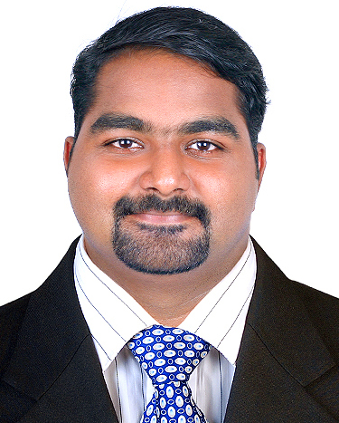

Security operations & detection
Alert triage, threat validation, KQL investigations, and hypothesis-driven hunting informed by MITRE ATT&CK.
I work in security operations.
Investigating security signals, understanding risk, and helping teams protect the systems people rely on.

I’m Eldho, a Cybersecurity Analyst with hands-on experience in security monitoring, incident investigation, vulnerability management, and Azure security.
My primary SIEM is Microsoft Sentinel, alongside experience with Splunk. I analyze endpoint and identity activity, investigate suspicious behavior, and collaborate with technical teams to prioritize and verify remediation.
This portfolio shares educational investigation examples using synthetic data, with clear documentation of their assumptions and limitations.
Connect on LinkedIn ↗I investigate endpoint and identity activity, analyze security logs, and work with technical teams to prioritize and verify remediation.
Alert triage, threat validation, KQL investigations, and hypothesis-driven hunting informed by MITRE ATT&CK.
Investigation of phishing, malware, suspicious authentication, and endpoint alerts, with clear documentation and remediation coordination.
Validate findings, prioritize by exposure and business impact, coordinate remediation, and verify fixes through rescanning.
Azure security monitoring, configuration reviews, and identity controls spanning MFA, Conditional Access, and role-based access.
A growing collection of documented scenarios, queries, and investigation workflows.
A KQL example correlating unsuccessful events with a subsequent successful sign-in for the same account and IP address within a defined time window.
Execution in Sentinel is not yet documented. This pattern alone does not establish compromise.
View the certificates and their recorded achievement dates.
Issued May 16, 2022
Certificate expiry: May 16, 2028
Issued November 9, 2023
Certificate expiry: November 8, 2026
Uploaded certificate expired November 8, 2026.
View certificate ↗ PDFIssued October 21, 2026
Certificate expiry: October 20, 2028
Issued October 24, 2026
Certificate expiry: October 23, 2028
Issued September 19, 2021
No expiry date printed on certificate
Issued October 14, 2022
Certificate expiry: May 16, 2028
Explore my work or connect with me professionally.